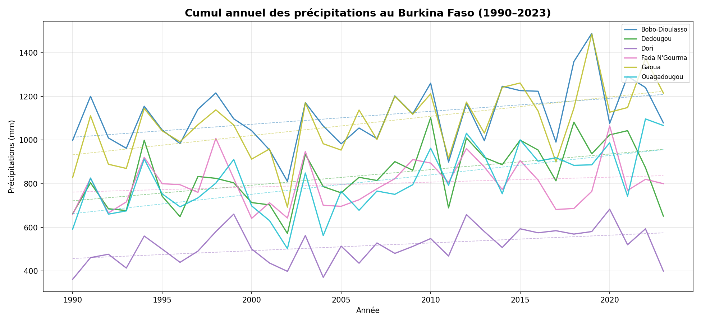
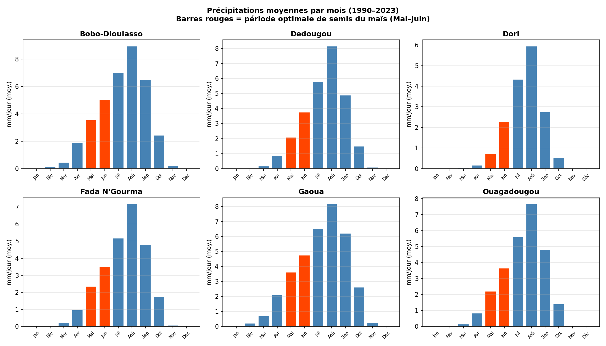
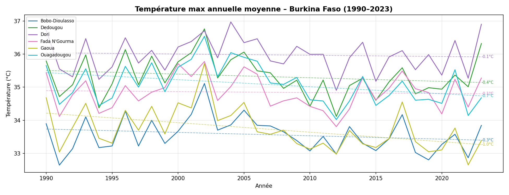
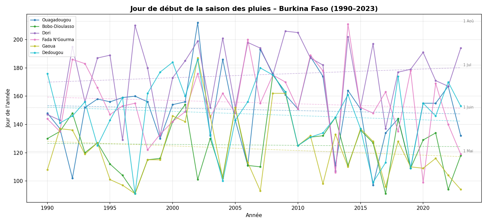
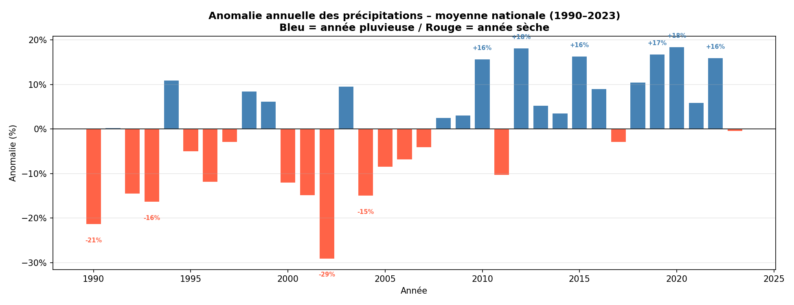

NASA POWER | 1990–2023 | 6 villes analysées
Les données météorologiques couvrent 33 ans (1990–2023) pour 6 villes représentatives du Burkina Faso, du Sahel au Sud soudanien.
L'API NASA POWER
fournit des données climatiques journalières dérivées des observations satellitaires et
des réanalyses atmosphériques. Quatre paramètres ont été téléchargés : précipitations
corrigées (PRECTOTCORR), température maximale
(T2M_MAX), température minimale
(T2M_MIN) et humidité relative (RH2M).
Communauté agricole (AG), résolution journalière, format JSON.
| Ville | Pluie annuelle moy. | Tmax moy. | Tmin moy. | Humidité moy. |
|---|---|---|---|---|
| Bobo-Dioulasso | 1 110,9 mm | 33,6 °C | 21,2 °C | 56,3 % |
| Dedougou | 839,6 mm | 35,3 °C | 21,9 °C | 46,6 % |
| Dori | 516,4 mm | 36,0 °C | 22,0 °C | 38,4 % |
| Fada N'Gourma | 799,4 mm | 34,8 °C | 21,9 °C | 50,3 % |
| Gaoua | 1 078,1 mm | 33,7 °C | 21,4 °C | 59,4 % |
| Ouagadougou | 809,5 mm | 35,1 °C | 21,3 °C | 49,1 % |
-999.0. Celles-ci ont été
remplacées par NaN (pandas) avant tout calcul, afin
d'éviter des biais dans les statistiques.
Cinq analyses visuelles couvrant les précipitations, les températures, la saisonnalité et les anomalies climatiques sur 33 ans.





Six techniques d'analyse de données utilisées dans ce projet, appliquées avec Python (pandas, numpy, matplotlib).
-999.0
par NaN (pandas) pour neutraliser les données
manquantes sans biaiser les calculs statistiques.
groupby et resample,
en adaptant la fonction d'agrégation (somme, moyenne) au paramètre.
np.polyfit)
sur 33 ans pour quantifier la direction et l'amplitude des évolutions
de précipitations et de températures.
Extraits du code Python utilisé pour le téléchargement des données, l'analyse et la détection du début de saison.
import requests
import pandas as pd
import os, time
VILLES = {
"Ouagadougou": {"lat": 12.36, "lon": -1.53},
"Bobo-Dioulasso": {"lat": 11.18, "lon": -4.30},
"Dori": {"lat": 14.03, "lon": -0.03},
"Fada N'Gourma": {"lat": 12.06, "lon": 0.35},
"Gaoua": {"lat": 10.33, "lon": -3.18},
"Dedougou": {"lat": 12.46, "lon": -3.46},
}
PARAMETRES = ["PRECTOTCORR", "T2M_MAX", "T2M_MIN", "RH2M"]
def telecharger_ville(nom, lat, lon):
url = "https://power.larc.nasa.gov/api/temporal/daily/point"
params = {
"parameters": ",".join(PARAMETRES),
"community": "AG", "longitude": lon, "latitude": lat,
"start": "19900101", "end": "20231231", "format": "JSON",
}
r = requests.get(url, params=params, timeout=90)
r.raise_for_status()
params_data = r.json()["properties"]["parameter"]
dates = pd.date_range("1990-01-01", "2023-12-31", freq="D")
df = pd.DataFrame(index=dates)
df.index.name = "date"
for param, values in params_data.items():
s = pd.Series(values)
s.index = pd.to_datetime(s.index, format="%Y%m%d")
df[param] = s
df.replace(-999.0, pd.NA, inplace=True)
df["ville"] = nom
return dfimport pandas as pd
import matplotlib.pyplot as plt
import numpy as np
def graphique_cumul_annuel(df):
annuel = (
df.groupby(["ville", df.index.year])["PRECTOTCORR"]
.sum().reset_index()
.rename(columns={"date": "annee", "PRECTOTCORR": "cumul_mm"})
)
fig, ax = plt.subplots(figsize=(13, 6))
for ville in annuel["ville"].unique():
d = annuel[annuel["ville"] == ville]
ax.plot(d["annee"], d["cumul_mm"], label=ville, linewidth=1.6)
# Tendance linéaire
z = np.polyfit(d["annee"], d["cumul_mm"], 1)
p = np.poly1d(z)
ax.plot(d["annee"], p(d["annee"]), linestyle="--", linewidth=0.9)
ax.set_title("Cumul annuel des précipitations (1990-2023)")
ax.legend()
plt.savefig("graphiques/01_cumul_annuel.png", dpi=150)
plt.show()
def graphique_anomalies(df):
annuel = (
df.groupby(["ville", df.index.year])["PRECTOTCORR"]
.sum().reset_index()
.rename(columns={"date": "annee", "PRECTOTCORR": "cumul_mm"})
)
moyennes = annuel.groupby("ville")["cumul_mm"].transform("mean")
annuel["anomalie_pct"] = (annuel["cumul_mm"] - moyennes) / moyennes * 100
national = annuel.groupby("annee")["anomalie_pct"].mean().reset_index()
fig, ax = plt.subplots(figsize=(13, 5))
colors = ["steelblue" if v >= 0 else "tomato" for v in national["anomalie_pct"]]
ax.bar(national["annee"], national["anomalie_pct"], color=colors)
ax.axhline(0, color="black", linewidth=0.8)
plt.savefig("graphiques/05_anomalies_precipitations.png", dpi=150)
plt.show()def debut_saison_pluies(pluie_serie):
"""
Retourne le jour julien du début de la saison.
Critère agronomique : cumul sur 3 jours >= 20 mm après le 1er avril.
"""
for i in range(90, len(pluie_serie) - 2):
cumul3j = pluie_serie.iloc[i:i+3].sum()
if cumul3j >= 20:
return pluie_serie.index[i].dayofyear
return None
def graphique_debut_saison(df):
resultats = []
for ville in df["ville"].unique():
df_v = df[df["ville"] == ville]["PRECTOTCORR"].dropna()
for annee in range(1990, 2024):
serie = df_v[df_v.index.year == annee]
jour = debut_saison_pluies(serie)
if jour:
resultats.append({"ville": ville, "annee": annee, "jour_debut": jour})
res = pd.DataFrame(resultats)
# Tracer l'évolution du début de saison par ville
fig, ax = plt.subplots(figsize=(13, 6))
for ville in res["ville"].unique():
d = res[res["ville"] == ville].sort_values("annee")
ax.plot(d["annee"], d["jour_debut"], label=ville, marker="o", markersize=3)
plt.savefig("graphiques/04_debut_saison_pluies.png", dpi=150)
plt.show()Cinq grands enseignements issus de l'analyse de 33 années de données météorologiques pour le Burkina Faso.